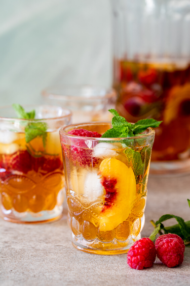

Iced tea
Prep Time :
10mins
Yield :
4
Ingredients
8 teabags
1.5 litters boiling water.
1 Litter juice of yor choice
2 cps fresh fruit and herbs.
Step
Pour the boiling water over the tea bags and allow to brew for 5 minutes. Remov the tea bags and allow to cool. To speed up the cooling process, add some ice to the tea.
Once coo, pour the cooled tea into a large jug and top with the fruit juic.
Ass ice and fruit of your choice and serve.